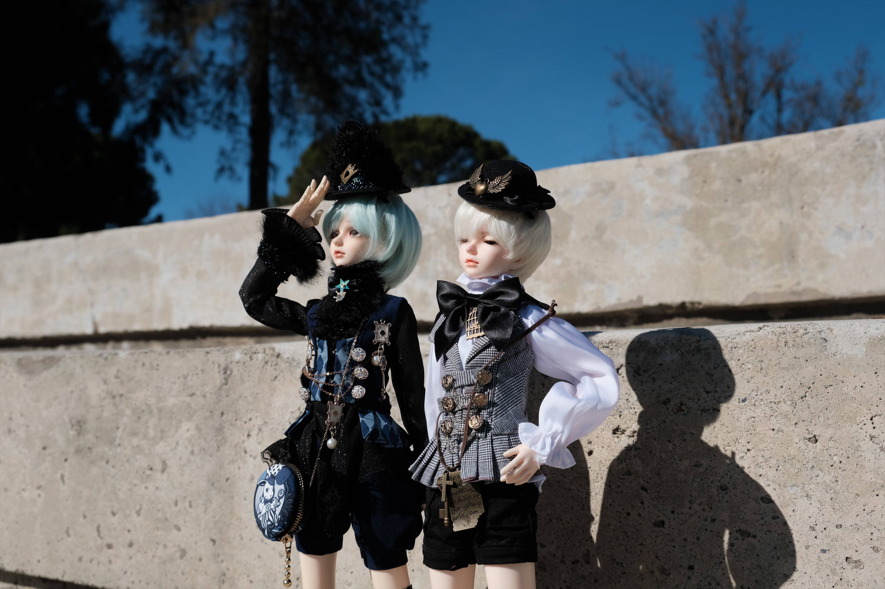

Game On Design
Through reading Amir Dori's Game Design UX Best Practices, I found some useful content and thinking.
Many games expect users to click on ads or spend money to make money. This seems to be a conflict of
interest for users, who want to reduce advertising and spending. But if you can get users to click
on ads or buy in stores, you can achieve a win-win situation. Amir Dori describes some ways to
achieve win-win results.
The first step is to improve the user experience. Things like making drag and drop objects look
natural and controlling the length of the video. This will increase the user's goodwill towards the
game. It also reduces the number of ways users can reject it, such as removing the "X" button in
pop-ups and hiding the 2 skip video button.
Another way to achieve a win-win situation is to reward the user when the game designer wants the
user to do something that is generally considered troublesome. For example, watching ads to get
extra opportunities or items, evaluating games to get rewards, shopping discounts or extra
giveaways.
Although I don't yet have to design a game for this purpose, I hope to use these tips to make my
users have a better experience. To sum up, I believe that when designing a game, I need to
understand what I want and what the audience wants so that I can accurately meet both needs. And
that may need some survey data to back it up.
Visual Thinking Analysis

Francis & Fran - Yuting Li, 2021.
The topic of my collection is dolls. These are two of my many dolls. They are twins. I chose this
image because I like its quality and composition. It requires almost no post-adjustment. The light
is right so that the features and clothing can be clearly seen, even the material of the decoration.
Another interesting point is that the joints of the dolls are not visible in this image, which makes
them look like real people. I love the feeling of looking like a real person but realizing it's a
doll when you look closer. This will also be my goal for future photos.
 Sunglasses - Viv Yuan, 2021.
Sunglasses - Viv Yuan, 2021.
I was supposed to discuss Michelle Gore's pictures, but she didn't show any pictures, so I had to
work with my partner Viv Yua. This is a picture of Viv Yuan. It's a pair of sunglasses. I think the
most interesting thing about this picture is that it looks like a photograph but it also looks like
a painting. So I asked Viv how she made it. The answer surprised me. It is both a photograph and a
painting. She used filters to turn ordinary photos into what they look like now. It is interesting
to see how the filter changes the color of the photo. I wish I could learn more about what filters
do.
Every Picture
In this Learning Journal, I studied the use of pictures and the interaction of loftgarten.
By Reading "10
Intriguing Photographs to Teach Close Reading and Visual Thinking Skills" I learned that
people get a lot of information from pictures. Loftgarten's site is a great combination of user
interaction and graphics. It is a portfolio of interior and architectural design. There are nine
projects. Users can get thumbnails of numbered works by hovering over unique numbers. These floating
pictures are good for getting the reader's interest, at least mine. After clicking the corresponding
number, you will enter the feature page of the specified work.
The author uses grand pictures to set off the atmosphere. Some of the sliding pictures show the
details of the work well. Even though the author didn't use a lot of words, it was easy for me to
get detailed information about the work. I think it's even easier to show your work with pictures
than with words. The site was also easy to use, and although the author didn't have any instructions
on how to do it, with only a few words and signs I could find what I was looking for.
In a word, I think pictures can quickly and accurately convey information to users and increase the
interest in the interaction.
Overlays
I hate overlays because they often come and surprise me and interrupt my reading experience.
Therefore, as a designer, I think it is important to design overlays carefully. Naema
Baskanderi's
article Best
Practices for Modals/Overlays/Dialog Windows has provided me with a lot of valuable
advice and inspiration. Users don't like overlays because they force users to do things and can
suddenly surprise them. But it can also provide users with convenience if the nature of overlays
is
effectively used.
First, to make users feel comfortable, overlays should be triggered by the user, not
automatically ejected. Second, the user should be able to turn off the overlay at any time. This
means clearly indicating how to turn them off. Third, overlays are only used for events that
need to be highlighted, and too many overlays can annoy the user. In addition, the size of the
overlay, its format, and its relevance to the context are all things worth considering.
So I think it's important to be thoughtful and user-centric when designing overlays. My goal was
to
design overlays that users liked, not overlays that they hated.
Forms
Forms are used in many places, so it's important to learn some techniques for making forms. By
reading Salim Ansari's article Best Practices for
Form
Design, I summarized some points that should
be paid attention to when making forms.
First, in order to make the user comfortable, it is best for the input items to be a single
column,
and the amount of input required for each entry should not be too long. If there is a lot of
content
that needs to be filled in by the user, it can be broken down into different parts, which can
reduce
the pressure on the user.
Second, user confusion should be minimized as much as possible. Allowing users to anticipate what
they need to fill in can increase productivity. For example, the length of the input box
indicates
the length of the required input. Avoid unnecessary drop-down menus. Although drop-down menus
can
provide some interaction, they also waste a lot of time, so buttons are a better choice for
fewer
options.
Finally, unnecessary troubles should be reduced. For example, use placeholders carefully. While
placeholders may seem useful, they have many disadvantages, such as the need for the user to
delete
input in order to see them. Therefore, important internal usage should be presented through
placeholders.
Human design is very important. The core of FORM design is to make users feel comfortable and
improve
work efficiency.